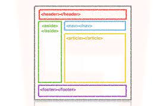

El proposito de esta pagima es profundizar el aprendizaje de los temas de Diseño de sitios Web
Etiquetas semánticas
Las etiquetas semánticas ayudan a definir la estructura del documento y permiten que las páginas web sean mejor indexadas por los buscadores
Diez, T., Domínguez, M. J., Martínez, J. J., & Sáenz, J. (2012). Creación de páginas Web accesibles con HTML5.

CSS Grid
CSS Grid es un sistema de maquetación web que divide la página en una cuadrícula o rejilla (grid) a partir de la cual se pueden posicionar los diferentes elementos de manera más sencilla, versátil y coherente. Su practicidad y sus múltiples ventajas lo han convertido en un estándar
Niess, G., Roubal, A., Thurner, S. y Roque, EB (2019). Diseños de cuadrícula CSS.